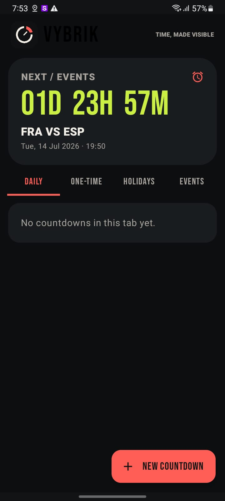

// APP DEV / PROBLEM SOLVER
PolyPericles
App builder. Game dev. Designer. Part-time barista.
Making useful things for people who deserve simpler tools.
// INDEPENDENT LAB
DopaLAb
Small experiments. Useful outcomes.
Home of practical apps, odd ideas, and the patience to make them work.
// FEATURED BUILD
VYBRIK
See the time left, not just the time set.
Vybrik is an alarm app that counts down to alarms and events, making AM and PM confusion much easier to avoid.

// PERSON BEHIND THE BUILDS
ABOUT ME
I am a 24-year-old English studies student with a passion for making and problem solving. A beginner polymath with time to explore, I turn curiosity into practical experiments and ideas into working products.
 MAKER, STUDENT, BUILDER
MAKER, STUDENT, BUILDER
// WORKING TOOLKIT
MY STACK
 JavaScript
JavaScript
 Python
Python
 React
React
 Node.js
Node.js
 Kotlin
Kotlin
 Android
Android
Learning is part of the stack.
// DopaLAb MASCOT
MISA
 A small hand for big ideas.
A small hand for big ideas.
// SIDE BUILDS
OTHER APPS
// DIRECT LINE
LET'S MAKE
SOMETHING.
Projects, collaborations, useful ideas, and interesting problems are welcome.